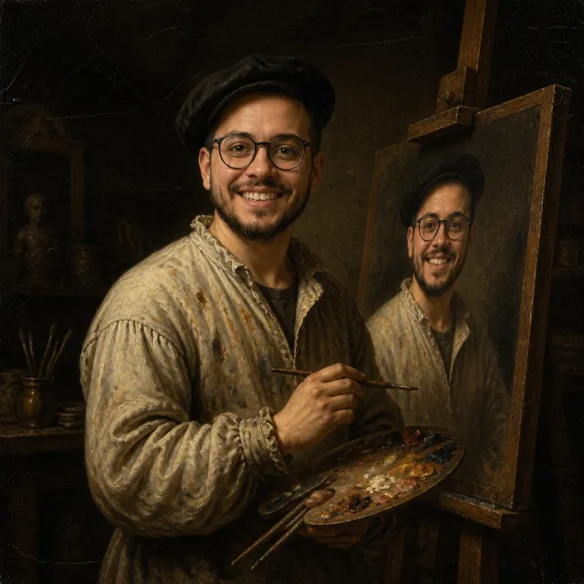
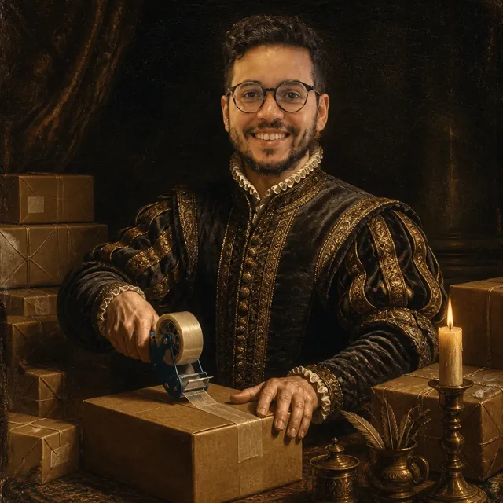
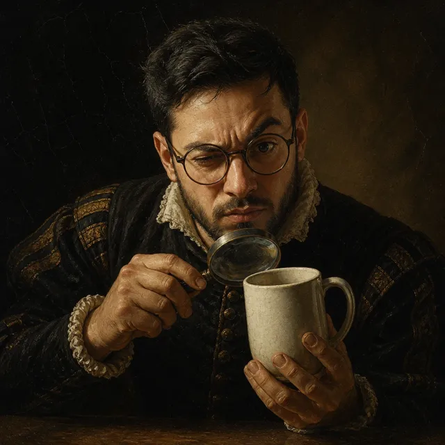

Meet the team.
All of him.
DoppelGifter is proudly powered by six dedicated professionals who share a vision, a work ethic, and — on closer inspection — a face.
We put one man's likeness on everything. It started with the org chart.
Had one good idea and immediately put his face on it. Refers to the mirror as "the board." The board approves everything.

Classically trained (watched a documentary). Every portrait he paints comes out looking suspiciously like the founder. Nobody has raised this.

Personally escorts every parcel to the post office like a royal procession. The tape gun has a name. The name is also Matthew.
Answers every email within the hour, largely because he is also the one who caused the problem. Has never once escalated a ticket. To whom?

Holds every mug to the light and asks, "Is the face crisp?" Rejection rate: brutal. Conflict of interest: enormous. The face is his.
Records every render, every farthing, every mug in an ancient ledger (it is a CSV). Approves all expenses after a stern discussion with himself.
A note on our org chart
Every arrow points to the same man. HR describes the culture as "unanimous." The annual company retreat is a table for one, and attendance is always 100%.
Payroll, mercifully, is simple.